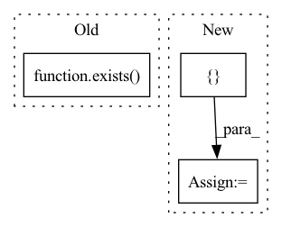

Pattern ID :24172
Before Change
self.to_logits = nn.Sequential(
nn.LayerNorm(dim),
nn.Linear(dim, num_tokens)
) if exists( num_tokens) else nn.Identity()
def forward(self, x):
x = self.to_embed(x)After Change
self.to_embed = nn.Embedding(num_tokens, dim)
window = cast_tuple(window, depth)
layers = nn.ModuleList([] )
for ind, w in zip(range(depth), window):
layer_blocks = nn.ModuleList([
PreNorm(dim, gMLPBlock(dim = dim, dim_ff = dim_ff, seq_len = seq_len, heads = heads, window = w))
])
if reversible:
layer_blocks.append(PreNorm(dim, gMLPBlock(dim = dim, dim_ff = dim_ff, seq_len = seq_len, heads = heads, window = w)))
layers.append(layer_blocks)
execute_klass = SequentialSequence if not reversible else ReversibleSequence
self.net = execute_klass(layers)
self.to_logits = nn.Sequential(
nn.LayerNorm(dim),In pattern: SUPERPATTERN
Frequency: 3
Non-data size: 3
Instances Fragment ID: 74978843
Project Name: lucidrains/g-mlp-gpt
Commit Name: 7642e36ff19c6b299a77e5c1ace038e9e6726202
Time: 2021-05-20
Author: lucidrains@gmail.com
File Name: g_mlp_gpt/g_mlp_gpt.py
M Class Name: gMLPGPT
N Class Name: gMLPGPT
M Method Name: __init__(1)
N Method Name: __init__(1)
M Parent Class: nn.Module
N Parent Class: nn.Module
M File Name: g_mlp_gpt/g_mlp_gpt.py
N File Name: g_mlp_gpt/g_mlp_gpt.py
M Start Line: 188
M End Line: 195
N Start Line: 194
N End Line: 215
Before Change
tracker_config = config.tracker
init_config = {}
if exists( tracker_config.init_config) :
init_config["config"] = tracker_config.init_config
if tracker_type == "console":After Change
"NumProcesses": accelerator.num_processes,
"MixedPrecision": accelerator.mixed_precision
}
init_config = { "config": {**config.dict(), **accelerator_config} }
data_path = data_path or tracker_config.data_path
tracker_type = tracker_type or tracker_config.tracker_type
if tracker_type == "dummy": Fragment ID: 74978845
Project Name: lucidrains/dalle2-pytorch
Commit Name: 58892135d9bcf117921c885dda161c0b67452096
Time: 2022-06-19
Author: aidan.dempster@gmail.com
File Name: train_decoder.py
M Class Name: AnonimousClass
N Class Name: AnonimousClass
M Method Name: create_tracker(5)
N Method Name: create_tracker(3)
M Parent Class:
N Parent Class:
M File Name: train_decoder.py
N File Name: train_decoder.py
M Start Line: 383
M End Line: 406
N Start Line: 447
N End Line: 484
Before Change
self.print(f"accelerator not given, and device not specified: defaulting to device of diffusion prior parameters - {diffusion_prior_device}")
self.device = diffusion_prior_device
else:
self.device = accelerator.device if exists( accelerator) else device
diffusion_prior.to(self.device)
// save modelAfter Change
and self.diffusion_prior.clip is not None
):
// Then we need to make sure clip is using the correct precision or else deepspeed will error
cast_type_map = {
"fp16": torch.half,
"bf16": torch.bfloat16,
"no": torch.float
}
precision_type = cast_type_map[accelerator.mixed_precision]
assert precision_type == torch.float, "DeepSpeed currently only supports float32 precision when using on the fly embedding generation from clip"
self.diffusion_prior.clip.to(precision_type)
Fragment ID: 74978847
Project Name: lucidrains/dalle2-pytorch
Commit Name: f9423d308b6f36e51152c2c45045ff4ebb308287
Time: 2022-07-20
Author: 51308183+nousr@users.noreply.github.com
File Name: dalle2_pytorch/trainer.py
M Class Name: DiffusionPriorTrainer
N Class Name: DiffusionPriorTrainer
M Method Name: __init__(10)
N Method Name: __init__(12)
M Parent Class: nn.Module
N Parent Class: nn.Module
M File Name: dalle2_pytorch/trainer.py
N File Name: dalle2_pytorch/trainer.py
M Start Line: 182
M End Line: 240
N Start Line: 177
N End Line: 246